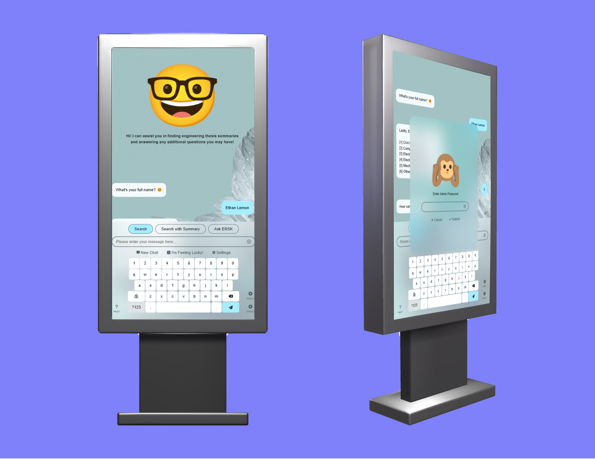

jovelyn s. icabales
aspiring jr. front-end developer
about me
A passionate Front-End Developer with a background in Computer Engineering, specializing in creating responsive, user-friendly websites using HTML, CSS, JavaScript, and frameworks like Tailwind CSS and Bootstrap. Enjoys translating design concepts into interactive digital experiences and continuously learning new technologies to enhance skills.
projects
-
 play video×
play video×This project is a Figma-based mockup design for the llaollao yogurt website, focusing on a clean, modern interface that reflects the brand’s vibrant identity.
-
-
 play video×
play video×This project is a front-end website design for "Mang-Inamerz," inspired by Mang Inasal. It features a user-friendly layout with vibrant colors and imagery to reflect a lively Filipino dining experience.
-
-
play video×
This project involves designing a user-friendly kiosk interface for an engineering research system kiosk, emphasizing efficiency and accessibility for seamless research interaction at URS-Morong.
-